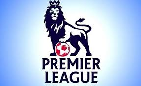

Temukan informasi seputar liga Inggris disini.

Liga Utama Inggris atau Liga Premier Inggris (bahasa Inggris: English Premier League, EPL) adalah liga tertinggi dalam sistem liga sepak bola di Inggris. Kompetisi ini diikuti oleh 20 klub, liga ini menerapkan sistem promosi dan degradasi dengan English
Football League (EFL).
Premier League adalah sebuah perusahaan yang di dalamnya klub peserta liga bertindak sebagai pemegang saham. Musim kompetisi dimainkan dari bulan Agustus hingga Mei, di mana setiap tim bermain 38 pertandingan, dengan 19 pertandingan kandang
dan 19 pertandingan tandang.
Kompetisi ini didirikan dengan nama awal FA Premier League (Liga Utama Inggris FA) pada 20 Februari 1992 setelah beberapa klub peserta Divisi Pertama Liga Inggris memutuskan untuk memisahkan diri dari liga tersebut yang telah didirikan pada
tahun 1888, dan mengambil keuntungan dari kesepakatan hak siar televisi yang dinilai menguntungkan. Kesepakatan tersebut bernilai 1 miliar poundsterling per musim 2013–2014, di mana Sky dan BT Group menjadi pemegang hak domestik untuk menyiarkan masing-masing
116 dan 38 pertandingan. 22 klub bermain pada musim pertama liga. Liga ini menghasilkan 2,2 miliar poundsterling per tahunnya sebagai hasil dari hak siar domestik dan internasional.
Liga ini menjadi liga olahraga dengan penonton terbanyak di dunia, dengan disiarkan di 212 wilayah ke 643 juta pemirsa di rumah dan memiliki jumlah penonton potensial sebanyak 4,7 miliar. Mayoritas stadion terisi penuh hampir mendekati kapasitasnya.
Liga Utama Inggris berada pada peringkat kedua dalam koefisien Liga UEFA berdasarkan pencapaian pada kompetisi Eropa dalam lima musim terakhir per 2019, dengan berada di belakang La Liga Spanyol.
49 tim telah bermain sepanjang penyelenggaraan, di mana 47 klub berbasis di Inggris dan 2 klub berasal dari Wales, menjadikan liga ini menjadi kompetisi lintas batas negara. Enam tim telah meraih gelar juara, yakni: Manchester United (13),
Chelsea (5), Manchester City (4), Arsenal (3), Blackburn Rovers (1), Leicester City (1) dan Liverpool (1).